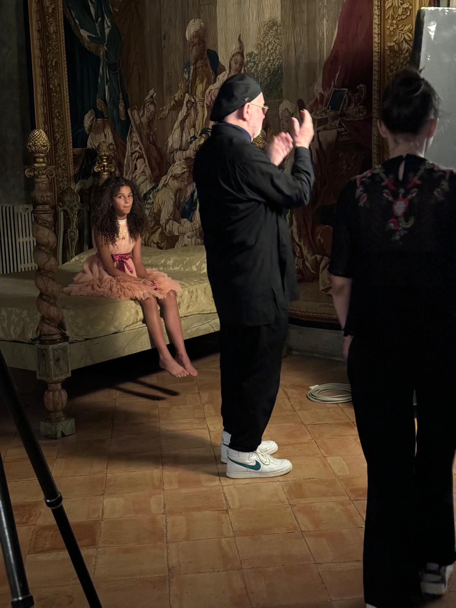
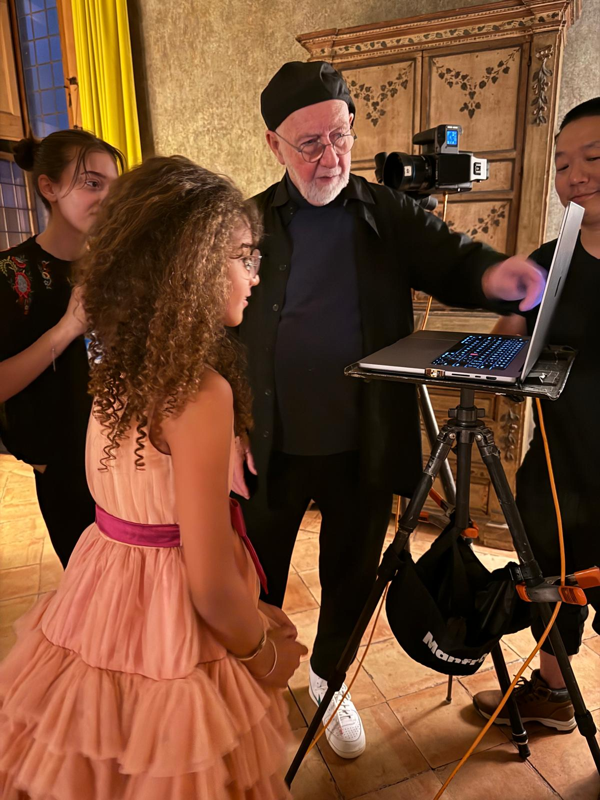
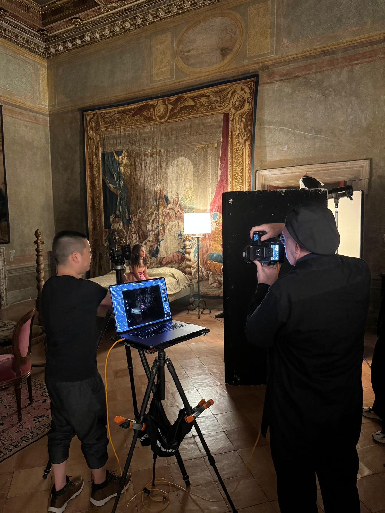
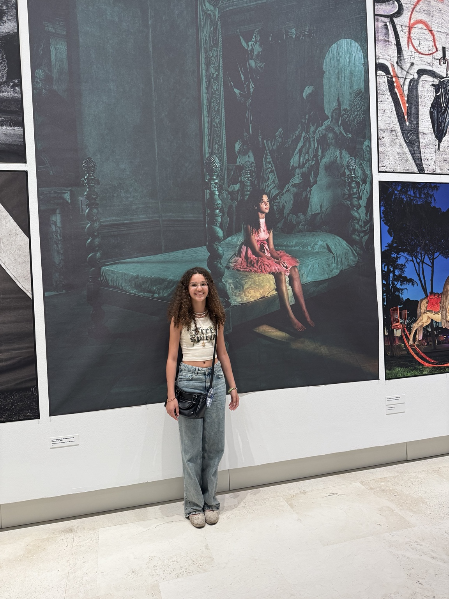
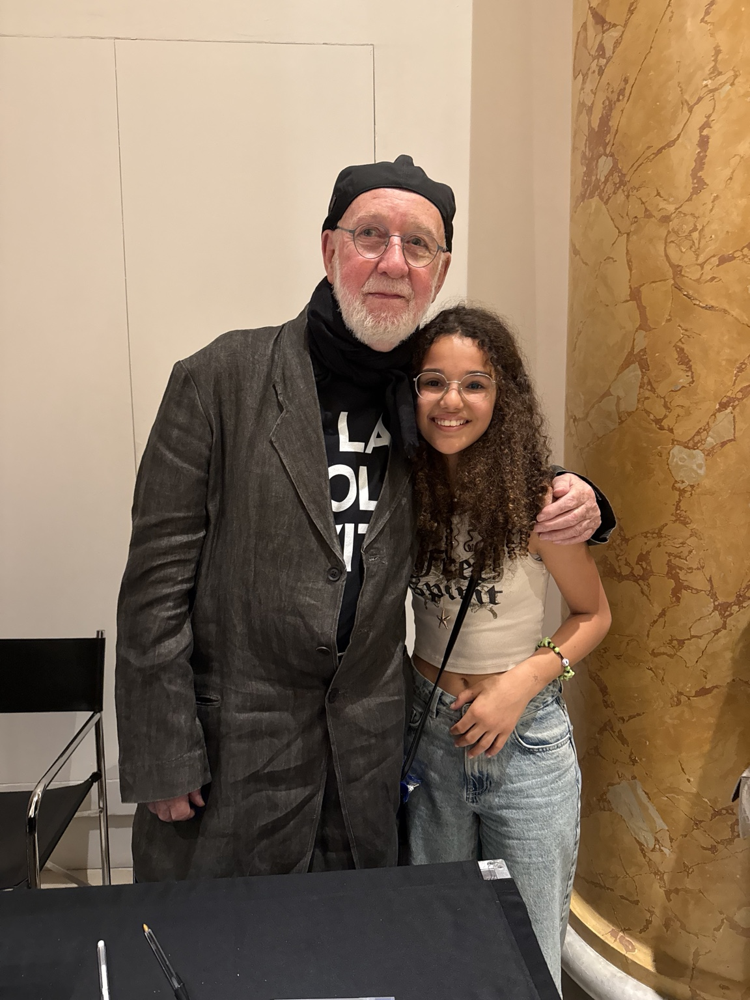
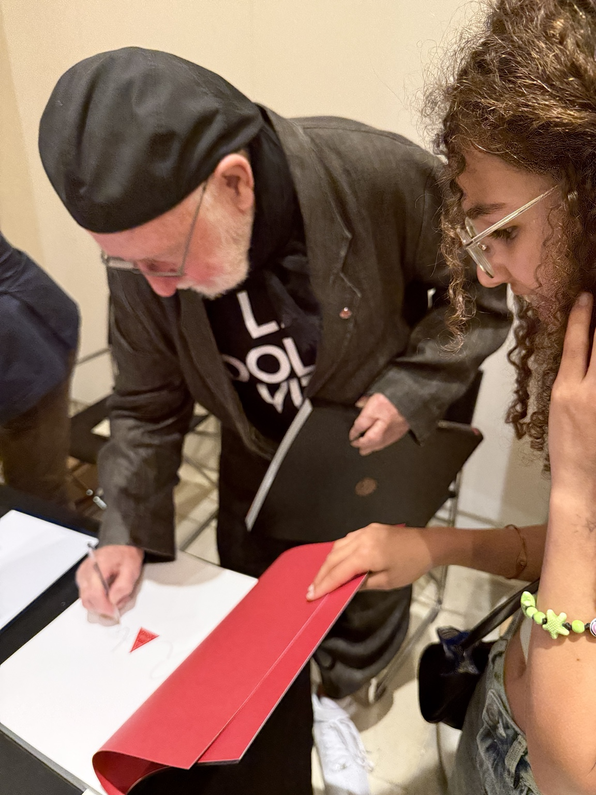

La mia esperienza con “Roma Codex” è cominciata quasi all'improvviso. Sono stata selezionata tramite la mia agenzia e tutto è successo molto velocemente: ci hanno contattati e quello stesso pomeriggio sono andata in un atelier di Roma per la prova dell'abito.
Una corsa contro il tempo
Tra la chiamata e il set c'è stato pochissimo tempo per organizzarsi. Dopo la prova vestiti, già la sera successiva ero pronta per prendere parte al progetto.
È stato uno di quei momenti in cui il lavoro arriva senza preavviso: nel giro di poche ore sono passata dalla telefonata dell'agenzia alla preparazione concreta del set.
Davanti all'obiettivo di Albert Watson
A rendere questa esperienza ancora più speciale c'era il nome dietro la macchina fotografica: Albert Watson, uno dei fotografi più influenti e prolifici della scena internazionale. In oltre cinque decenni di carriera ha attraversato fotografia d'arte, moda, ritratto e fotografia commerciale, costruendo immagini entrate nell'immaginario contemporaneo.
Sapere di essere stata scelta per un suo progetto ha dato a quella serata un peso particolare. Sul set ho potuto vedere da vicino quanto ogni dettaglio venga costruito con precisione: non soltanto la posa, ma anche la luce, lo spazio, l'abito e il rapporto tra il soggetto e l'ambiente che lo circonda.
Una notte a Villa Medici
La sera successiva, alle 20:30, sono arrivata a Villa Medici, a Roma. La fotografia sarebbe stata realizzata in una camera storica, dominata da un antico letto a baldacchino e da grandi elementi decorativi.
Indossavo un abito dal carattere quasi fiabesco, nei toni del rosa. L'atmosfera della stanza e il vestito creavano insieme un'immagine molto particolare, quasi sospesa nel tempo.

Due ore e mezza per una fotografia
Siamo rimasti sul set fino alle 23 circa. In tutto, quasi due ore e mezza di lavoro per arrivare a un'unica fotografia finale.
È stata una delle cose che mi ha colpito di più: dietro una sola immagine possono esserci tantissimi piccoli aggiustamenti. Posizione, luce, inquadratura, abito ed espressione vengono controllati e modificati fino a quando ogni elemento trova il proprio equilibrio.

Dietro l'immagine
Le fotografie del backstage mostrano una parte che normalmente non si vede nell'immagine definitiva: il team al lavoro, il monitor, le luci, le prove e le indicazioni necessarie per arrivare allo scatto scelto.

Progetto: Roma Codex
Fotografie: Albert Watson
Location dello scatto: Villa Medici, Roma
La mia partecipazione: soggetto fotografico del progetto
Dal set alla mostra “Roma Codex”
Quel set è poi diventato parte di un progetto molto più ampio. “Roma Codex” è stato presentato al Palazzo Esposizioni Roma dal 29 maggio al 3 agosto 2025, in una mostra composta da 200 fotografie in bianco e nero e a colori dedicate alla città di Roma.
Ripensandoci, è particolare pensare che una serata iniziata con pochissimo preavviso e costruita intorno a un solo scatto sia poi entrata a far parte di un progetto fotografico così grande.
Alla presentazione della mostra
Quando la mostra è stata presentata al Palazzo Esposizioni Roma ho potuto vedere la fotografia finalmente inserita nel percorso espositivo, in grande formato, insieme alle altre immagini di Roma Codex. Vedere quello scatto, nato durante quella lunga serata a Villa Medici, trasformato in parte di una mostra è stato uno dei momenti più belli dell'esperienza.

In occasione della presentazione ho incontrato nuovamente Albert Watson. Dopo aver vissuto il suo metodo di lavoro sul set, ritrovarlo nel momento in cui il progetto veniva mostrato al pubblico ha chiuso idealmente il percorso iniziato con quella telefonata dell'agenzia.


Per approfondire il progetto e la mostra “Roma Codex” è disponibile la scheda ufficiale di Palazzo Esposizioni Roma.
Roma Codex – Scheda ufficiale